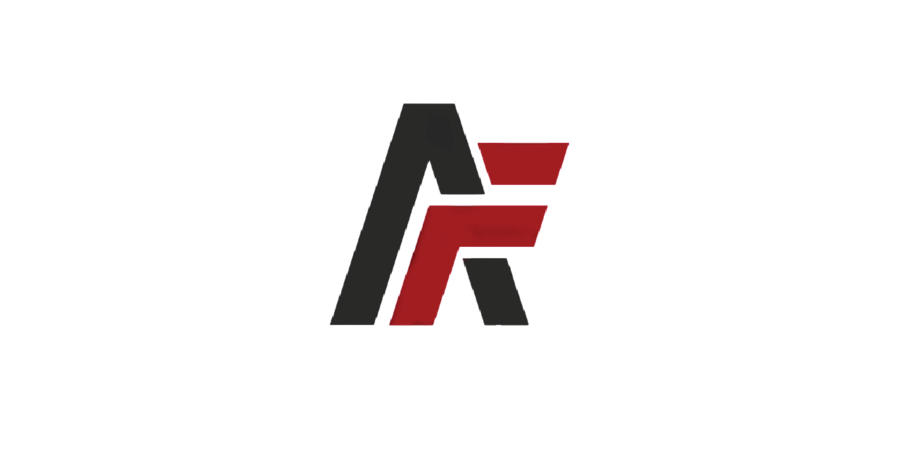
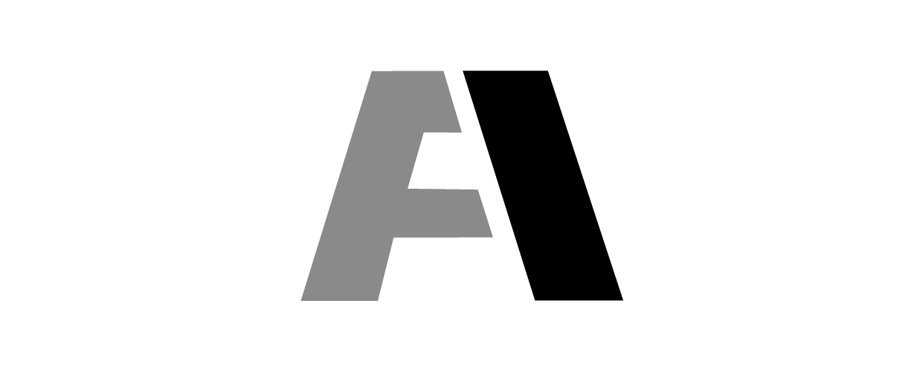
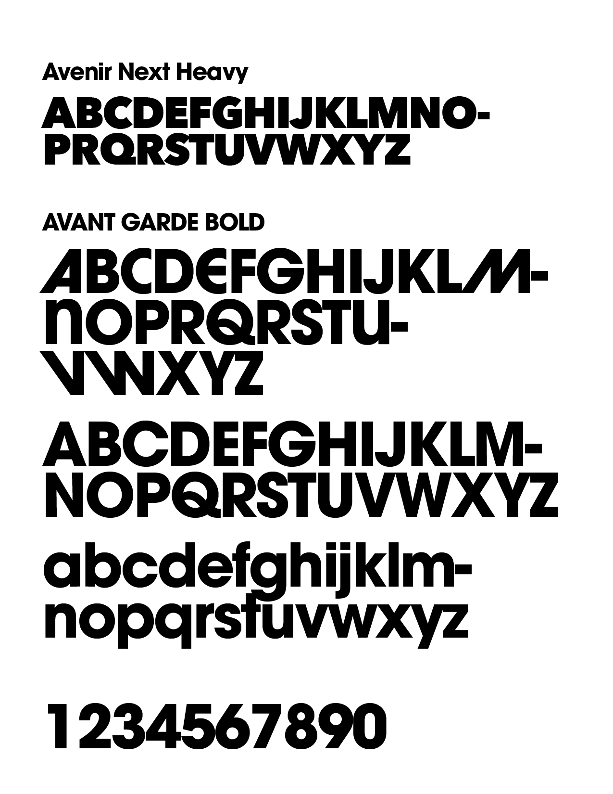
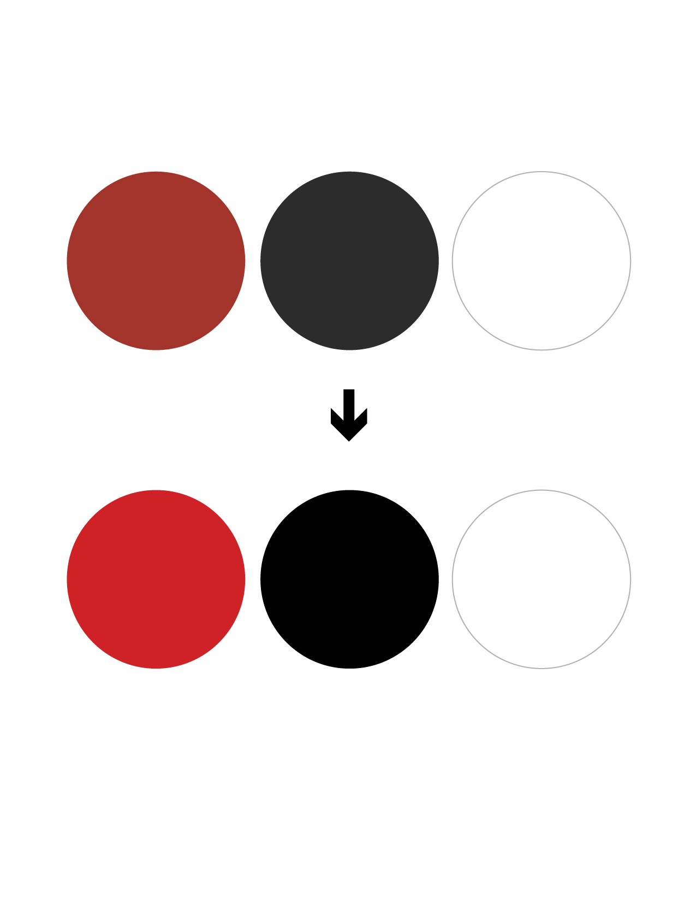

A Force to be reckoned with.
The Mark
The old identity had a strong mark. It was simple enough that was discerinbile at smaller sizes, it was flat which made for a great glyph.
However, it looked imbalanced and felt like it would tip over and it didn’t look like any letter so it was hard to describe. It failed the napkin test.
What is the napkin test? If you could draw your logo on a napkin, witth a shaprie and still discern it as your logo then you know it’s a great mark.
When doing any logo refinements we have to be careful as not make any radical changes. With that in mind, we take inspiration from the previous logo and enhance the traits that we like and refine and build on it.
irst thing I liked was how the /F was intertwined with the /A and we can use that as the seed of our idea
Having the company named after its founder, Dave Almarinez it was important to have the A be more prominent.
The glyph shows movement as it is in the process of moving forward and combining to fully form the A, in a forcful manner.
Typeface
The initial chosen typeface was Avenir while it was a strong typeface, I felt that something more robust and more left-field was more appropriate.
For that we choose Avant Garde as our main typeface.
Avant Garde designed by Herb Lubalin primarily created for a magazine bearing the same name, it was then later revivved d cointinued by International Typeface Corporation.
Designed in the 1920s, The typeface remains a staple in the design realm because of its unique ligaturs and very robust and modern look.
A solid typeface with its huge rounded curves while maintaining it’s straight stems.
It evokes stability, boldness and modernism.
The alternative /A glyph represents A moving forward. (Almarines moving forward.)
A befitting typeface to an extremely
Color Scheme
We also adjusted the color scheme to evoke more energy. We added a bit of orange to the maroon to make it livlier.
Deepend the blacks for impact.